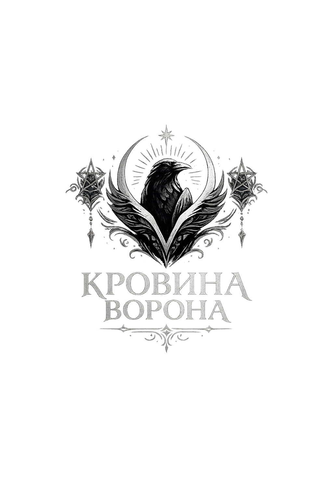
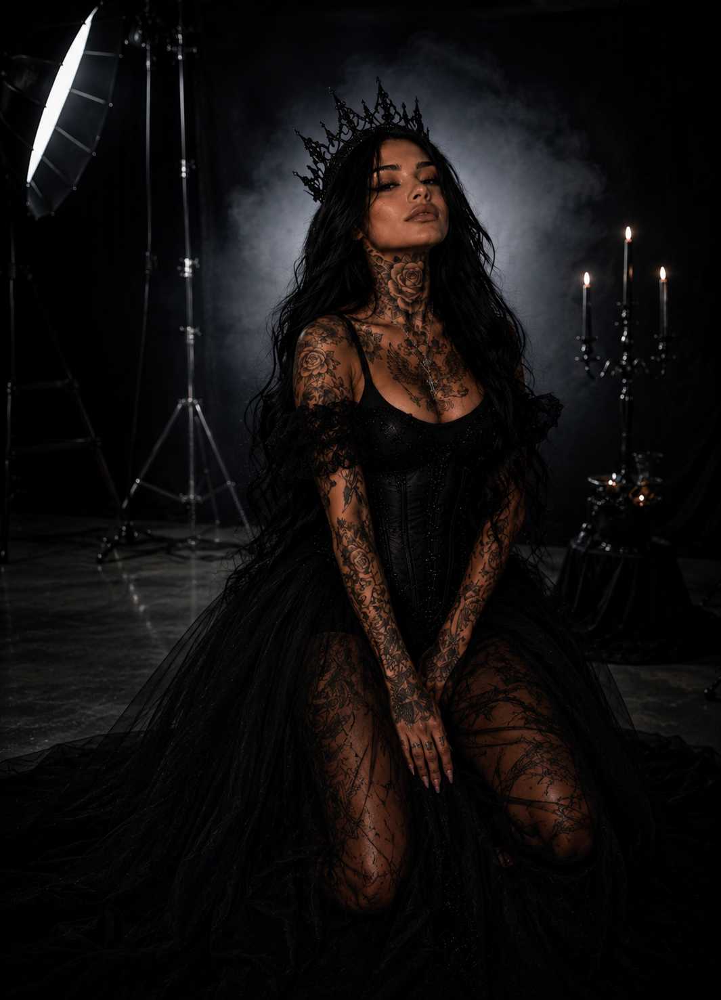
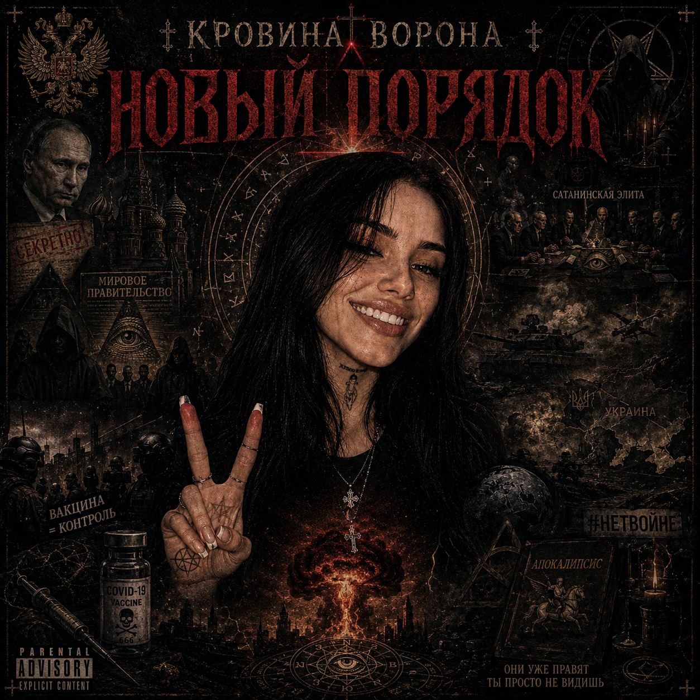
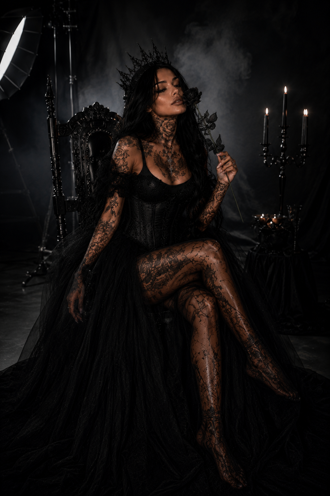
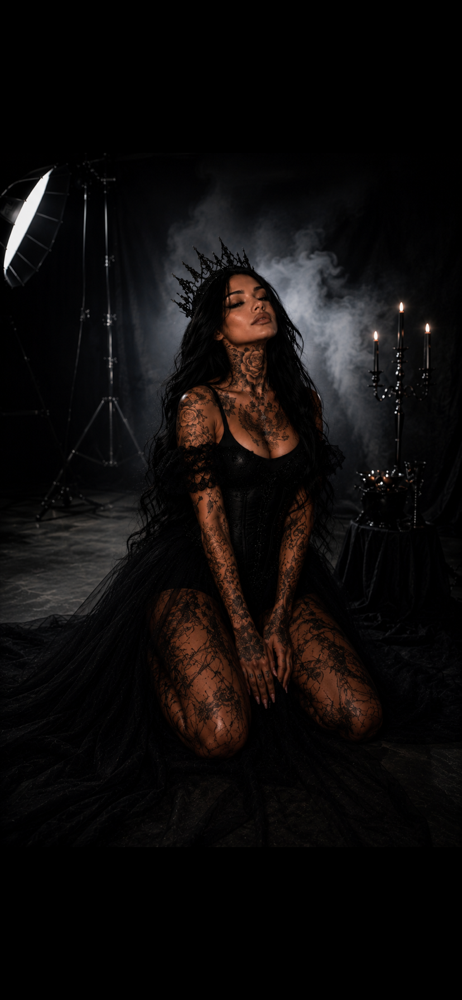
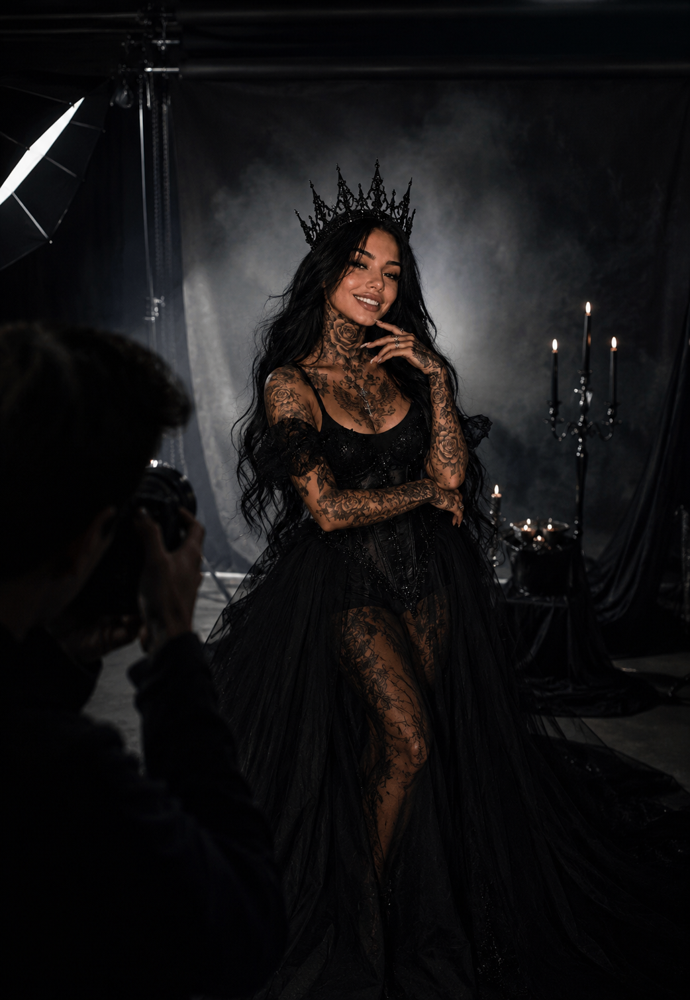

Independent Artist • Ghostwriter • Songwriter
« Entre le passé et le nouveau monde. »
Découvrir l'EP

01 — Чёрный Дождь Мегаполиса
02 — Рептилий Шёпот
03 — Ночной Конверт
04 — Чёрные Свечи



RÉSEAUX & STREAMING